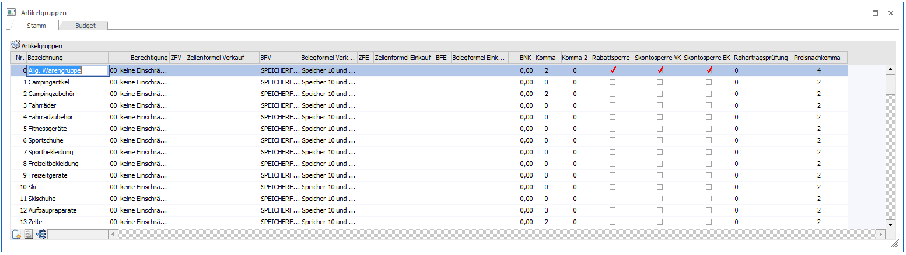
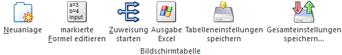

Die Artikelgruppen, welche über den Menüpunkt…
1 WinLine FAKT
1 Stammdaten
1 Gruppenanlage
1 Artikelgruppen
1 Register "Stamm"
… definiert werden können, werden den Artikeln zugeordnet und erfüllen u.a. folgende Aufgaben:
ü Zusammenfassung von Artikel für Selektionen in z.B. Auswertungen
ü Zuweisung der Nachkommastellen (Menge und Preis)
ü Zuordnung von WinLine FAKT-Formeln
ü Definition der Rohertragsprüfung

In der Tabelle des Registers "Stamm" können die einzelnen Artikelgruppen angelegt bzw. editiert werden. Hierfür stehen folgende Felder bzw. Spalten zur Verfügung:
Ø Nummer
Die Artikelgruppennummer ist numerisch, wobei maximal 9999 Artikelgruppen anagelegt werden können.
Ø Bezeichnung
An dieser Stelle wird die Bezeichnung (50stellig und alphanumerisch) der Artikelgruppen hinterlegt.
Ø Berechtigung
Für jede Artikelgruppe kann ein Berechtigungsprofil vergeben werden. Wenn der Anwender eine Artikelgruppe aufruft, wird geprüft, ob dieser einer Benutzergruppe zugeordnet wurde, welche in dem jeweiligen Profil enthalten ist und ob somit eine Bearbeitung erlaubt wäre (nähere Informationen entnehmen Sie bitte dem WinLine ADMIN - Handbuch).
Hinweis
Benutzern des Typs "Administrator" oder mit der Administratorenberechtigung "Benutzeradministrator" steht in der Auswahlbox der Punkt ">> Neues Profil" zur Verfügung. Über die Anwahl dieses Eintrags kann in der Folge ein neues Berechtigungsprofil angelegt werden.
Ø ZFV - Zeilenformel Verkauf
An dieser Stelle erfolgt die Eingabe der Zeilenformel für den Verkauf, d.h. die Formel wird automatisch in den Belegstufen "1 - Angebot" bis "4 - Faktura" verwendet. Die Ausführung erfolgt wiederum (im Standard) nach Bestätigung der Artikelnummer. Im nebenstehenden Feld ist die Bezeichnung der Formel sichtbar.
Ø BFV - Belegformel Verkauf
Hier erfolgt die Eingabe einer Belegformel, welche über den gesamten Beleg rechnet (z.B. Errechnung der Packstoffsummen, die in die entsprechenden Summenvariablen gerechnet werden und am Ende des Beleges in Form eines zusätzlichen Artikels abgerufen werden). Diese Formel wird nur im Verkaufsbereich, d.h. bei der Bearbeitung von Belegen der Belegstufen "1 - Angebot" bis "4 - Faktura", verwendet, wobei die Ausführung bei dem Speichern des Belegs stattfindet. Im danebenstehenden Feld wird die Bezeichnung der Formel angezeigt.
Ø ZFE - Zeilenformel Einkauf
An dieser Stelle erfolgt die Eingabe der Zeilenformel für den Einkauf, d.h. die Formel wird automatisch in den Belegstufen "5 - L.Anfrage" bis "8 - L.Faktura" verwendet. Die Ausführung erfolgt wiederum (im Standard) nach Bestätigung der Artikelnummer. Im nebenstehenden Feld ist die Bezeichnung der Formel sichtbar.
Ø BFE - Belegformel Einkauf
Hier erfolgt die Eingabe einer Belegformel, welche über den gesamten Beleg rechnet (z.B. Errechnung der Packstoffsummen, die in die entsprechenden Summenvariablen gerechnet werden und am Ende des Beleges in Form eines zusätzlichen Artikels abgerufen werden). Diese Formel wird nur im Einkaufsbereich, d.h. bei der Bearbeitung von Belegen der Belegstufen "5 - L.Anfrage" bis "8 - L.Faktura", verwendet, wobei die Ausführung bei dem Speichern des Belegs stattfindet. Im danebenstehenden Feld wird die Bezeichnung der Formel angezeigt.
Ø Bezugsnebenkosten (BNK)
In dieser Spalte erfolgt die Hinterlegung der Bezugsnebenkosten in Prozent. Die Bezugsnebenkosten werden vom EK-Preis ausgehend berechnet, bei der Zubuchung ins Lager automatisch dem Lagerwert zugerechnet und erhöhen somit den Einstandspreis im Lager
Ø Komma / Komma 2
Mit Hilfe einer Auswahlliste erfolgt die Definition, mit wieviel Nachkommastellen (0 bis 4) in der Menge die Artikel geführt werden sollen. Die Spalte "Komma" gilt für die Menge1 (Standard) und "Komma 2" für die Menge2.
Hinweis
Nähere Information zu dem Thema "Menge2" können u.a. dem Kapitel "Artikel - Preise" des FAKT Handbuchs entnommen werden.
Achtung
Werden die Nachkommastellen nachträglich verringert, werden Mengen bei der Eingabe dementsprechend auf- bzw. abgerundet. Dabei werden bestehende Datensätze in der Datenbank nicht umgewandelt, d.h. in der Datenbank kann es danach Nachkommastellen bei Mengen geben, die nicht mehr im Programm ausgewertet werden können.
Ø Rabattsperre
Durch Aktivierung dieser Option wird die Summenrabattberechnung für diese Artikelgruppe unterbunden.
Hinweis
Diese Einstellung wird direkt im Beleg gespeichert und bei diversen Aktionen wie Belegnachdruck / Belegstorno oder bei Auswertungen wie Backlog, Belegverfolgung etc. aus der Belegtabelle ausgewertet.
Ø Skontosperre VK
Durch Aktivierung dieser Option wird die Artikelgruppe aus der Bildung der Skontobasis entfernt.
Hinweis
Diese Einstellung wird direkt im Beleg gespeichert und bei diversen Aktionen wie Belegnachdruck / Belegstorno oder bei Auswertungen wie Backlog, Belegverfolgung etc. aus der Belegtabelle ausgewertet.
Ø Skontosperre EK
Durch Aktivierung dieser Option wird die Artikelgruppe aus der Bildung der Skontobasis entfernt.
Hinweis
Diese Einstellung wird direkt im Beleg gespeichert und bei diversen Aktionen wie Belegnachdruck / Belegstorno oder bei Auswertungen wie Backlog, Belegverfolgung etc. aus der Belegtabelle ausgewertet.
Ø Rohertragssperre
In den Applikationsparametern "(WinLine START - Optionen - Parameter - Bereich "FAKT-Parameter") kann ein Mindestrohertrag und ein Sollrohertrag hinterlegt werden. Pro Artikelgruppe ist wiederum eine Definition möglich, wie der Rohertrag im Detail geprüft werden soll.
ü 1 - Warnung
Es erfolgt eine
Meldung, der Bearbeiter kann die Erfassung der Belegzeile nach Bestätigung der
Warnung fortsetzen.
ü 2 - Sperre
Es erfolgt eine
Meldung, der Bearbeiter kann die Erfassung der Belegzeile nach Bestätigung der
Warnung nicht fortsetzen. Entweder wird eine andere Belegzeile erfasst, oder
einer der Faktoren die den Rohertrag bestimmen (Einstandspreis, Verkaufspreis,
Rabatte) wird editiert.
ü 0 - Keine Prüfung
Hinweis
Der Prozentsatz, welcher geprüft wird, kann auch optional über die Einstellungen im Vertreterstamm übersteuert werden.
Ø Preisnachkomma
An dieser Stelle kann definiert werden, wie viele Nachkommastellen bei dem Einzelpreis berücksichtigt werden sollen. Standardmäßig wird hier 2 vorgeschlagen, es können jedoch bis zu 6 Nachkommastellen gewählt werden.
Hinweis
Wenn in der Artikelgruppe die Preisnachkommastellen verändert werden, gilt dies für alle Artikel, die diese Artikelgruppe hinterlegt haben. Wenn der Artikel mit einem Preis mit 4 Nachkommastellen angelegt wurde, so wird bei einer Änderung der Artikelgruppe auf z.B. 2 Nachkommastellen der Preis zwar mit weniger Nachkommastellen angezeigt, intern bleibt jedoch der ursprüngliche Preis erhalten (mit denen auch die Berechnungen durchgeführt werden). D.h. nach einer Umstellung müssen über die Preiswartung die Preise korrigiert werden.
Tabellenbuttons

Ø Neuanlage
Mit Hilfe des Buttons "Neuanlage" wird in die erste freie Zeile der Tabelle, in welche eine neue Artikelgruppe angelegt werden kann.
Ø markierte Formel editieren
Durch Anwahl des Buttons wird die markierte Formel (Spalte "ZFV - Zeilenformel Verkauf", "BFV - Belegformel Verkauf", "ZFE - Zeilenformel Einkauf" oder "BFE - Belegformel Einkauf") zur Bearbeitung im Formel-Fenster geöffnet.
Ø Zuweisung starten
Durch Anklicken des Buttons "Zuweisung starten" wird das Programm "Zuweisung" gestartet, in welchem Artikelgruppen auf einfache Art und Weise bereits angelegten Artikel zugeordnet werden.
Ø Ausgabe Excel
Durch Anwahl des Buttons "Ausgabe Excel" wird der Inhalt der Tabelle nach Microsoft Excel übergeben.
Ø Tabelleneinstellungen speichern
Die Spalten einer Tabelle können grundsätzlich an beliebige Positionen verschoben, bzw. in der Breite entsprechend angepasst werden. Durch Anwahl des Buttons "Tabelleneinstellungen speichern" werden die Einstellungen benutzerspezifisch gespeichert und bei dem nächsten Aufruf des Programmpunktes wieder vorgeschlagen.
Ø Gesamteinstellungen speichern
Im Gegensatz zu "Tabelleneinstellungen speichern" können mit "Gesamteinstellungen speichern" mehrere Tabellenaufbauten gespeichert und nach Wunsch geladen werden. Zusätzlich werden Sonderfunktionen der Tabelle (z.B. "Spalte gruppieren") ebenfalls bei der Speicherung bedacht.
Buttons
Ø Ok
Durch Anwahl des Buttons "Ok" bzw. der Taste F5 werden die Artikelgruppen gespeichert.
Ø Ende
Mit Hilfe des Buttons "Ende" bzw. der Taste ESC wird das Fenster geschlossen und alle nicht gespeicherten Eingaben verworfen.
Ø Budgetinfo (nur im Register "Budget")
Durch Anwahl des Buttons wird die Budgetauswertung am Bildschirm angezeigt.
Ø Istwerte berechnen (nur im Register "Budget")
Mit Hilfe des Buttons "Istwerte berechnen" werden die Istwerte für die Artikelgruppe berechnet und in die Tabelle übernommen.